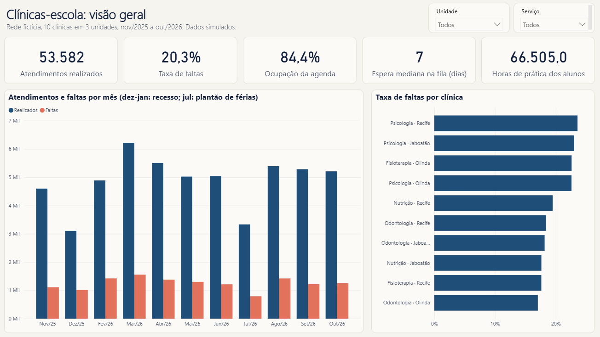

A segunda de manhã falta mais
Na segunda de manhã, 27,6% dos pacientes não aparecem. Nos outros turnos, perto de 19%. A sexta à tarde vem logo depois.
Um ano de atendimentos de 10 clínicas-escola de saúde em Recife, Olinda e Jaboatão: uma em cada cinco consultas fica vazia. Mude a unidade e o serviço no painel.
Abrir o painel animadoVisão geral · nov/2025 a out/2026
Realizados
53.582
Taxa de faltas
20,3%
Agenda ocupada
84,4%
Espera mediana
7 dias
Horas de prática perdidas
16.515 h
Dados fictícios, gerados por simulação. Os mesmos números do relatório no Power BI.
Uma clínica-escola é onde estudantes de saúde atendem a comunidade, de graça ou a preço baixo, supervisionados por professores. Este projeto analisa um ano dessa operação numa rede fictícia.
Odontologia e Fisioterapia exportam do sistema; Psicologia e Nutrição anotam numa planilha, uma aba por mês. Juntar as duas coisas é o trabalho que ninguém vê e de que todo indicador depende.
Duas fontes. O sistema exporta um CSV por mês, e o filtro da exportação repete o último dia do mês anterior: 830 agendamentos apareciam duas vezes. Em maio, uma atualização acrescentou uma coluna nova.
Cinco jeitos de escrever falta. “Faltou”, “falta”, “F”, “Não compareceu” e “faltou ” com espaço no fim. Datas digitadas como texto, horário como “8h”, linha copiada, linha de total, prontuário em branco.
Sem número confiável. Sem padronizar, não dá para responder quantos pacientes faltam, quanto da agenda fica vazia, quanto tempo a fila espera nem se o aluno cumpre as horas de estágio.
O que eu fiz. Simulei um ano de uma rede de 10 clínicas, baguncei os dados como na vida real e padronizei tudo com 16 regras em Python, provando linha a linha que a limpeza está certa. Depois, o Power BI.


Psicologia - Recife.xlsx · MAR 2026 · linha 13
Primeiro, chega assim, digitada à mão.
Depois das regras R03 e R05
Depois, no padrão: hora e situação.
Regra R07 · nome único no cadastro
Então, ligada ao paciente certo.
Psicologia · Recife · março
Por fim, vira indicador no painel.
34%de chance de faltar
Taxa de faltas medida nas 12.411 primeiras consultas do período, por faixa de espera. Quem esperou até 7 dias falta 19% das vezes.
| Data | Horário | Situação | Regras |
|---|
Forma desconhecida não é adivinhada: a linha vai para a lista de conferência.
Taxa de faltas por dia e turno
Agenda ocupada por clínica (rótulo: espera mediana)
Alunos de 2026.1 e a meta de horas
Na segunda de manhã, 27,6% dos pacientes não aparecem. Nos outros turnos, perto de 19%. A sexta à tarde vem logo depois.
A Fisioterapia de Olinda usa 41,5% da agenda e tem a maior fila: 114 dias de espera mediana. A primeira consulta só é marcada às segundas e quartas.

121 de 183 alunos bateram a meta de horas em 2026.1. Outros 43 teriam batido se os pacientes não tivessem faltado.
Confirmar a consulta na véspera
Se a segunda de manhã caísse para a média dos outros turnos, seriam 613 faltas a menos no ano.
Chamar a fila de Olinda todo dia
387 pessoas esperam por Fisioterapia em Olinda, com 58% da agenda livre.
Encaixe para quem falta muito
Metade das faltas vem de 19% dos pacientes: 2.769 pessoas.
Ver as horas do aluno toda semana
43 alunos teriam batido a meta de 2026.1 sem as faltas dos pacientes.
Lista suspensa na planilha
29.943 situações escritas fora do padrão deixariam de existir.

Antes de dados, trabalhei seis anos na Aeronáutica. Na odontoclínica, eu fazia o faturamento das guias dos planos de saúde; no hospital, coordenava os estágios com as universidades. Clínica e aluno são o mundo deste projeto.
Os dados são fictícios porque dado de saúde não vai para um repositório público. Simular trouxe uma vantagem: guardei a verdade e consegui provar que a limpeza está certa, linha a linha, em vez de só achar que está.
O Python padroniza e calcula. O Power BI tem o Power Query, o modelo estrela e 24 medidas DAX, cada uma conferida contra o Python direto no motor do Power BI. A mesma base está pronta para o Looker Studio.
Se você trabalha com clínicas, escolas ou qualquer operação que vive de planilha, eu gostaria de conversar.
Diego Santiago
Analista de dados · Recife
